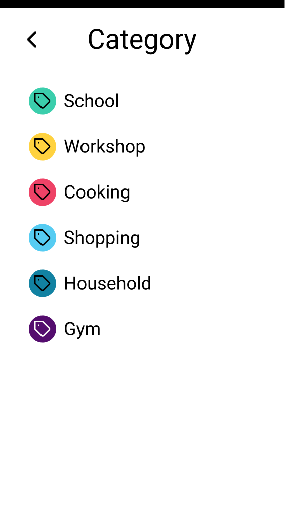
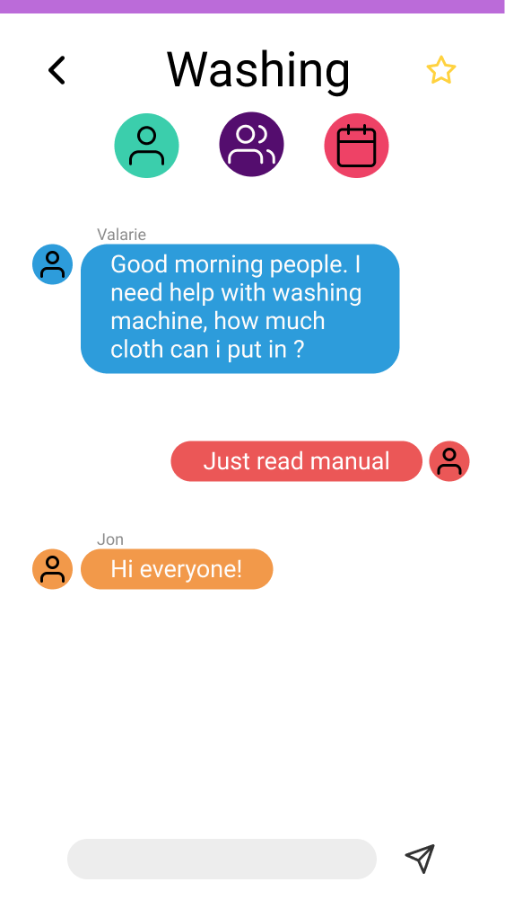
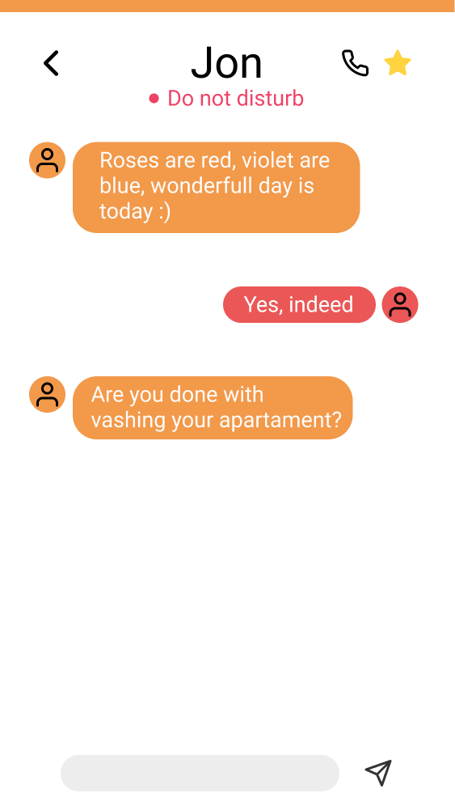

Language:
Language: English - US
English - US
 Norsk
Norsk
English - US
NorskThe Quick Menu is an easy-to-access menu. Here, you can change your settings, go to the home page and see your favorite groups and chats. With a swipe right through your screen the Quick Menu will appear.
Quick Menu 1.1

Quick Menu 1.2

The Quick menu allows you easy access to your settings and night screen. You also have quick access to your favorite groups and chats.
The Home screen shows you your recent activities and important upcoming activities.
This is the next page you will be presented with after pressing the arrow on the top of the Home Page. Here you will be able to choose from which category you would like to meet people from.
Category 2.1

Here you will be able to select the wanted category that you want to continue with.
After you have chosen the category that you wanted, you will be presented with a new set of sub-categories. Here you will be able to precisely choose what you want.
Sub Category 3.1

Sub Category 3.2

Here you will be able to fine select the desired task that you are interested in.
You will join a global chat after selecting the desired sub-category, with the theme of the chat being the selected sub-category.
Here you have the option to join a private chat with someone you have met in the global chat. Here, both of you can talk more about similar interests and get to know each other better.
Global Private 4.1
Global Private 4.2

Global Private 4.3

From the Global chat page, you have the option of choosing the turquoise button, on top of the screen.
After choosing the turquoise button, you will be presented with a list of people that are online and located in the samme category.
After choosing the preferred person, you will join the private chat and be able to chat along with the other person.
Here you wil be able to join a group chat with people you have met in the Global chat. This section is supposed to work like a group room where all the people in the group can talk about similar interests.
Global Group 5.1
Global Group 5.2

Global Group 5.3

From the Global chat page, you have the option of choosing the purple group button on the top of the screen.
After choosing the group button, you will be presented with a list of different groups that are online, which you are able to join.
After choosing the preferred group, you will join the group chat, and be able to chat along with the group.
With meet request you can appoint a request to meet someone in real life or join other people in order to collaborate in real life.
Meet Request 6.1
Meet Request 6.2

From the Global chat page, you have the option choosing the red button on the top of the screen.
Here you see the notification from the person that has requested to meet you with the location, theme and time, and whether you can join.